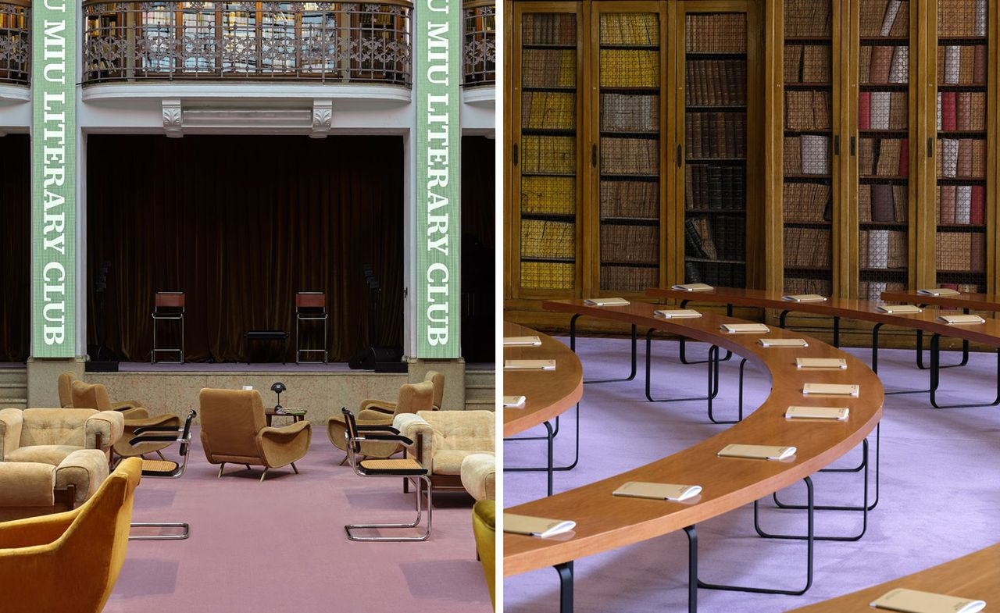

A Beijing boy with anime in his head, medieval folklore in his sketchbook, and a crochet hook in his hand. Oscar Ouyang stages his runway in a barn where the rocking horses have started to chip.
The London designer everyone now wants to talk about spent seven years at Central Saint Martins before showing his first collection on the official London Fashion Week schedule last September. He called it ‘Don’t Shoot The Messenger’. Carrier birds ran through the show as a motif. Owls, doves, eagles, feathers worked into knit and woven leather. The clothes had a built-in story, and the story was already specific.
His sophomore outing in February pushed further into narrative. Ouyang built a runway inside a countryside barn and filled it with the wreckage of a fictional manor house at auction. Hay bales propped up gilt frames. Old portraits sat scuffed and faded. Wrought iron birdcages hung above velour chaise longues. Coloured spotlights flicked over rocking horses with paint flaking from the wood.
The premise: an aristocratic family has gone bankrupt, the kids are throwing one last party in their parents’ ruined house, dressing in heirlooms before the gavel comes down. The clothes carried that story without explaining it. Italian-cut suits with British make. Coats with a faintly military line. Blazers shaped like sweaters. Varsity pieces with metallic, hand-crocheted sleeves. Fur trims on a vest.
The hand
Knit is where Ouyang really sits. He belongs to a small group of London designers, alongside Paolo Carzana and several Saint Martins peers, treating the craft as something pliant and slightly unruly rather than nostalgic. Crochet, hand-knit, chunky, fine, sometimes all in the same look. The garments read as hand-finished because they are. It shows in the irregular stitch, in the way a vest sits a little oddly on the shoulder, in the kind of texture that does not photograph easily.
Wallpaper’s January Next Generation issue placed him at the centre of its 2026 cover story on rising fashion stars. Orla Brennan, who wrote the piece, drew a line between Ouyang’s practice and a wider London moment defined by handwork, slowness and a return to the studio bench. He cites anime, his friends’ wardrobes, and medieval folklore as starting points, in that order. He is not coy about any of it.
Knit, in his hands, is anything but quiet. The stitch carries a story, and the story is allowed to be a little ridiculous.
Margaux DelacroixThe case for London

Oscar Ouyang Spring/Summer 2026, London. Photography courtesy of Wallpaper*
London has had a difficult few years. Designers leaving for Paris. Brands folding mid-season. The schedule shrinking around the names that remain. Two consecutive runway shows from Ouyang, both fully cast and fully realised, are part of why the city still reads as a place where new ideas can land. He is on the British Fashion Council’s NewGen list. His studio is in east London. His business is small enough to make decisions in the room.
He says he wants to make clothes a friend could imagine wearing on a real Saturday night. The friend is specific too. The collection notes name the women and men he had in mind, photographed in their own flats, sitting on their own sofas. It is research that looks like life, which is the kind of research that tends to produce clothes people actually want.
Pre-fall is on the runway calendar for autumn. Industry talk has him on a number of mentorship and prize lists for the season ahead. The auction in the manor house, fictional and ongoing, has been quietly rescheduled. The clothes have already left the floor.